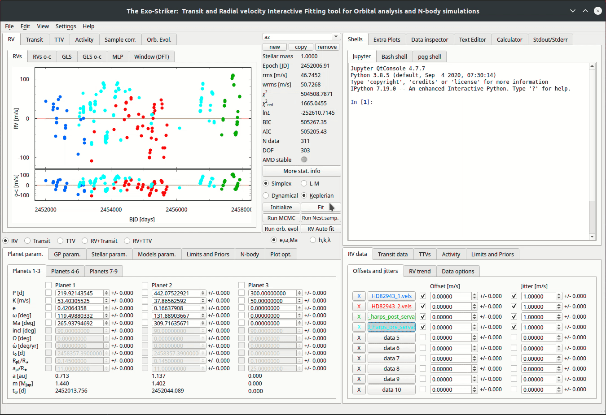
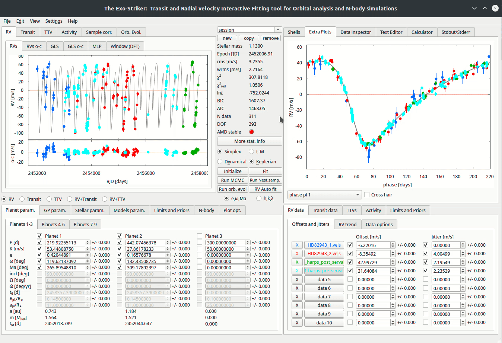
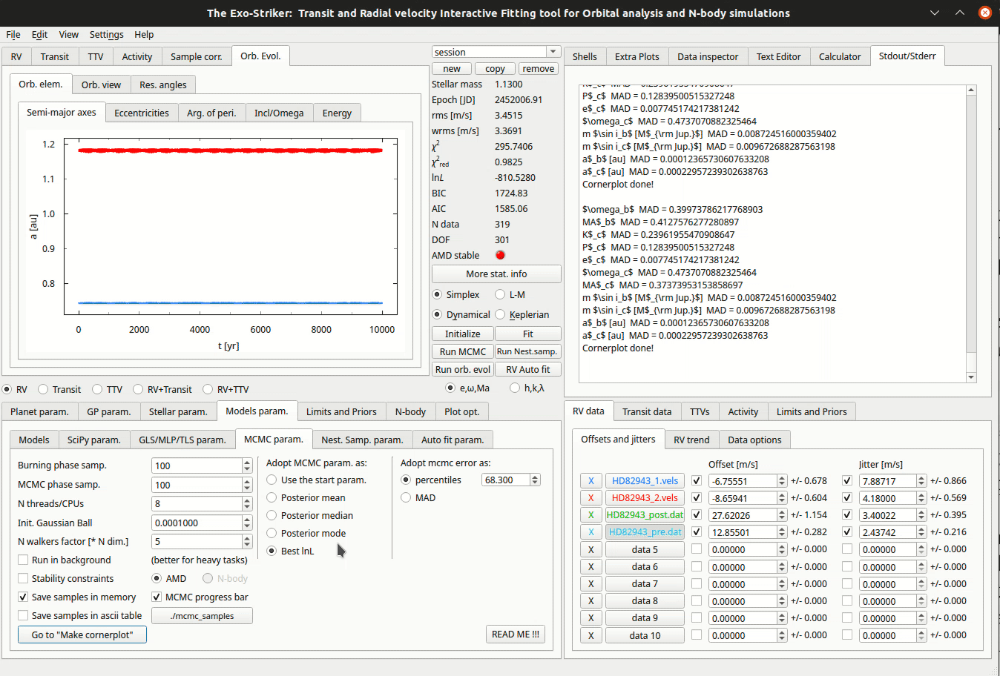

Introduction
Before starting the tutorials, it is kind to familiarize yourself with the basic parameters that exostriker uses to determine the goodness of a fit but also the ones that describe the planet orbits. All of these parameters can be seen on the homepage of exostriker.
Home Page of the GUI
Some statistical parameters
rms: root-mean-square, the root-mean-square deviation of an estimator is a measure of the imperfection of the fit of the estimator to the data.
wrms: weighted root-mean-square.
χ2: chi-squared.
χ2 reduced: chi-squared reduced.
lnL: likelihood function, describes the odds that a model fits your expectations/data, we use this funtion for comparison between models. The model with higher value is preferred.
BIC : Bayesian information criterion, can be used to compare models only when the numerical values of the dependent variables (like χ2 & lnL) are identical for all models being compared, the model with the lowest BIC is preferred.
AIC : Akaike information criterion, estimates the relative amount of information lost by a given model. The less information a model loses, the higher the quality of it. The smaller the AIC the less information is lost (comparison between models).
N data: number of data/observations.
DOF: degrees of freedom , the value is a result of subtracting all the parameters in the fit from total number of data points.
Some options to fit your model
Simplex : fitting curves to data using the Simplex algorithm.
L-M : fitting curves to data using the Leveberg-Marquardt algorithm.
Keplerian : a Keplerian analysis is performed on the data.
Dynamical: a dynamical analysis is performed on the data.
Initialize: ?
Fit: optimization parameter, fixes the offsets of the datasets.
Run MCMC : runs Markov chain Monte Carlo simulations.
Run Nest.samp : generates samples using the Nested sampling alogithm.
Run orbital evolution: runs an orbital evolution to your data.
RV auto fit: a curve is applied to data.
Planet & orbital parameters
P [d]: planets period.
K [m/s]: planets RV amplitude.
e: eccentricity of the planets orbit.
ω [deg]: argument of periastron.
Ma [deg]: mean anomaly at the first observational epoch.
inc: orbits inclination.
Ω [deg]: longitude of the ascending node.
ώ [deg/yr]: ?
t0[d]: ?
Rpl/R*: planets radius to stars radius ratio.
apl/R*: semimajor axis to stars radius ratio.
a [au]: semimajor axis.
m [Mjup] : planets mass.
tω[d]: ?
Now, depending on the type of data that you are trying to fit, you have to choose between Radial Velocities (RV data), Transits (Transit data) and TTVs on the bottom right panel and then add the data files.
Adding the RV data
There are 3 ways to load RV data on exostriker
the first is through the bottom right panel

the second is through the Data inspector on the top right panel
the third is also through the Data inspector but from the RVBank option
Fitting the RV data
Now lets perform a simple fit to data to showcase how exostriker works and we will explain the remaining GUI options as a part of each tutorial.
Inspecting for periodicities on the RV graph.
In this tutorial we will fit the RV dataset with the Keplerian model. This model uses the radial velocity equation to fit the data. It’s a model of motion of the star as expected from Kepler’s laws.
By fitting the data (Fit option), exostriker fixes the Offset parameter and also applies the jitter (jitter is only included on Simplex). A curve is applied on the data by the RV Auto fit option. It is proper to fit between the Simplex & L-M algorithms and notice how the Statistical parameters change in order to find the best fit. Now we notice that the RV graph is a periodic function. On the GLS window, on the top left panel, you can see the periodogram of our initial RV periodic function but also the main peaks that it is consisted of. Every significant peak needs investigation of whether it is a planet or stellar activity. In this tutorial the initial signal is consisted of two planets. You can check the phase diagram of each peak by selecting Extra Plots.
The RVs o-c & GLS o-c windows represent the residual RV signal and periodogram each time a planet is included in the analysis.
If the statistical parameters of your fit are maximized/minimized then you have probably obtained the best Keplerian fit of your model.
Multiplanetary systems
In case of multiplanetary systems it is kind to consider the planet masses and distances from each other (close orbits). Massive planets with close distances from the host star, will surely interact with each other due to gravity. Then a further investigation using the Dynamical model is necessary. That will take into account the gravitational interactions between the massive bodies by intergrating the equations of motion using the Gragg-Bulirsch-Stoer method.
Before you enable the Dynamical option make sure that the orbital parameters that are acquired so far correspond to the best Keplerian fit, because they will be used as a first guess for this fit. The next thing that you need to notice is that the orbital parameters inclination (i) and the longitude of the ascending node (Ω) become available. The dynamical model has the advantage of being able to fit for mutually inclined orbits. For the purposes of this tutorial we assume edge-on coplanar orbits (i=90, Ω=0) for consistency with the unperturbed Keplerian frame and in order to work with minimum dynamical masses.
The difference in the phase diagrams between the two models is significant!
Performing an orbital evolution
At this point we can perform an orbital evolution, using the SyMBA N-body symplectic integrator, in order to notice how the orbital parameters develop with time.
Running an orbital evolution with Keplerian model.
First the stellar parameters need to be distinguished, by changing the values of Stellar param. on the bottom left panel. Then add the maximum time of evolution by clicking at N-body. Run orbital evolution (Run orb. evol) and you will be transfered automatically to the Orb. Evol panel, where you can see how the orbital parameters evolve with time.
Running an orbital evolution with Dynamical model.
Evaluating the stability of a system means that the orbital parameters have to be examined long-term (e.g 1Myr) and with a time step of at least 100 points per orbit. For example, if the inner planet has a period of 200 days, then a time step of 2 days is required. In case of planet–planet close encounters SyMBA automatically reduces the time step to ensure an accurate simulation with high orbital resolution. SyMBA also checks for planet–planet or planet–star collisions or planetary ejections and interrupts the integration if they occur.
A planet is considered lost and the system unstable if, at any time:
the mutual planet–planet separation is below the sum of their physical radii (assuming Jupiter mean density), i.e., the planets undergo collision.
the star–planet separation exceeds two times the initial semimajor axis of the outermost planet, which we define as planetary ejection.
the star–planet separation is below the physical stellar radius (R ≈ 0.03 au), which we consider a collision with the star.
All of these events are associated with large planetary eccentricities leading to crossing orbits, close planetary encounters, rapid exchange of energy and angular momentum, and eventually instability. Therefore, these somewhat arbitrary stability criteria are efficient to detect unstable configurations and save CPU time.
Obtaining the best fit parameters uncertainties
In order to perform a parameter distribution analysis, of the best-fit, and estimate their uncertainties, you need to couple them with a Markov chain Monte Carlo (Run MCMC) sampling scheme using the emcee sampler.

First, you need to fill the parameters in MCMC param. (Models param.) on the bottom left panel.
Burning phase samp. : First steps in the MCMC chain to let the walkers explore the parameter space. (At least 1000)
MCMC phase samp. : Represents the total amount of samples. (At least 5000)
N threads/CPUs : How many CPUs from your local machine will be used for this progress.
Init. Gaussian Ball : How far from the starting point the sampler will start producing samples.
N walkers factor : Each walker will produce a different chain.
Then, you need to select between the options in Adopt MCMC param. as, in this tutorial we select the best maximum likelihood .
Now, everything is ready for the MCMC process to start. A different set of parameters are being tested, starting from the best ones that you have already obtained, and for each set the lnL is being calculated. If a better lnL is found then its parameters are counted as errors on the initials (from the best fit).
For the purposes of this tutorial the values of Burning phase & MCMC phase samples are low, for the process to finish at a reasonable time. Sometimes the MCMC process can take from hours to days, depending on the amount of samples and the dimensions of the system (N data minus DOF). You can always check the MCMC progress at the Stdout/Stderr on the top right panel.
You can also set some bounds on each parameter on the Limits and Priors on the bottom left panel. If you are sure about the range of values of a single parameter, that will save you computational time. In this tutorial we set the boundaries empirically.
When the process is over, the samples are ready! Then you can press Go to “Make Cornerplot” and you will be redirected to the Plot options. There you can customize the cornerplot but also include/exclude parameters from being printed. By pressing Make cornerplot the final results are extracted on your local exostriker folder as a pdf format.
In our case the final figure shows the posterior MCMC distribution of the fitted parameters with a dynamical modeling scheme whose orbital configuration is edge-on and coplanar. The histogram panels in the figure provide a comparison between the probability density distribution of the overall MCMC samples for each fitted parameter. The two-dimensional parameter distribution panels represent all possible parameter correlations with respect to the best dynamical fit (starting point), whose position is marked with blue lines. In color red all the samples are represented. Also The red 2D contours are constructed from the overall MCMC samples and indicate the 68.3%, 95.5%, and 99.7% confidence levels (i.e., 1σ, 2σ, and 3σ).

Final histograms.